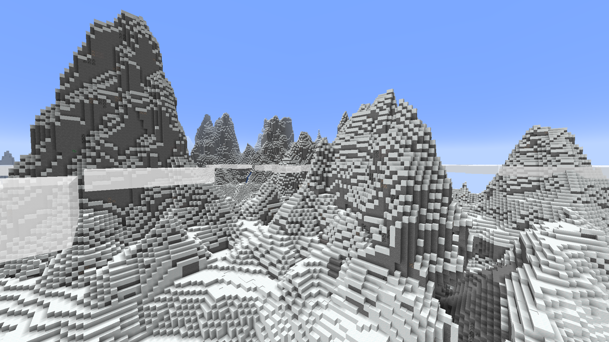
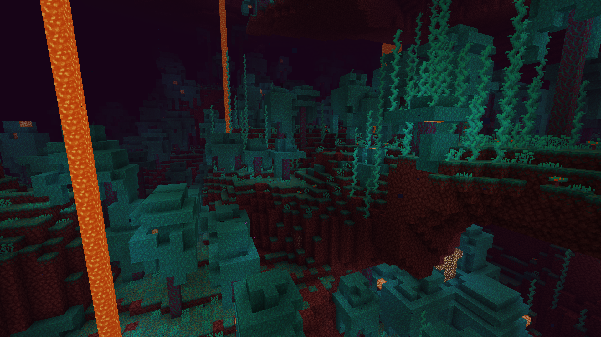

Biomes in Minecraft refer to distinct regions within the game's world, each characterized by unique environmental features and landscapes. These variations include differences in terrain, vegetation, wildlife, and overall aesthetics. One notable aspect of biomes is the diversity in terrain, ranging from expansive plains to towering mountains, dense forests, vast deserts, and icy tundras.
In addition to terrain, biomes also differ in their flora and fauna. Players may encounter various types of trees, plants, and flowers, each specific to certain biomes. Furthermore, wildlife such as animals and mobs vary between biomes, with some regions being home to passive creatures like sheep and cows, while others harbor more hostile mobs such as zombies or skeletons.
Another defining characteristic of biomes is their distinct visual appearance. This includes differences in grass and foliage colors, water and sky hues, and overall atmospheric ambiance. Players can immerse themselves in diverse landscapes as they explore the vast and varied biomes of the Minecraft world, each offering its own unique challenges and opportunities for adventure.
| Biome Name and Image | Description |
|---|---|
| Ocean |
The ocean biome in Minecraft is vast and expansive, featuring a floor predominantly composed of gravel but also showcasing patches of dirt, sand, and clay. Within its depths, you'll find thriving underwater vegetation such as seagrass and kelp, alongside aquatic life like cod and salmon (exclusive to Bedrock Edition), adding a lively touch to its serene waters. |
Deep Ocean  |
Deep ocean biomes in Minecraft plunge to depths exceeding 30 blocks, doubling the depth of standard oceans. These abyssal expanses are characterized by gravel-covered floors and are home to ocean monuments, where guardians, elder guardians, prismarine, and sponges can be found. Underwater ravines, with their top layer of lava replaced by bubble-inducing magma blocks, frequently dot the landscape, adding an extra layer of intrigue to these deep, dark waters. |
Warm Ocean  |
The warm ocean biome in Minecraft boasts light teal waters at the surface and a sandy floor akin to its lukewarm counterpart. Teeming with vibrant marine life, including pufferfish and tropical fish, it stands out as the exclusive home to coral reefs and sea pickles within ocean biomes. Unlike its counterparts, kelp doesn't thrive here, yet the absence of a deep equivalent does not diminish the allure of these inviting, sunlit waters. |
Lukewarm Ocean  |
The lukewarm ocean biome in Minecraft features light blue surface waters and a sandy floor occasionally dotted with patches of dirt or clay. Flourishing with underwater vegetation like kelp and seagrass, it hosts a diverse array of aquatic life including cod and salmon (exclusive to Bedrock Edition), alongside pufferfishes (Java Edition only) and tropical fishes. Notably absent are coral formations, distinguishing this serene aquatic environment from its warmer counterpart. |
| Deep Lukewarm Ocean |
The deep lukewarm ocean biome in Minecraft mirrors its shallower counterpart with light blue surface waters and a sandy floor. However, this variant plunges to double the depth, showcasing its vastness and mystery. Like other deep ocean variants, it harbors ocean monuments, where guardians, elder guardians, prismarine, and sponges can be encountered. This added depth creates an expansive underwater realm ripe for exploration and discovery. |
| Cold Ocean |
The cold ocean biome in Minecraft features dark blue surface waters and a floor primarily composed of gravel, reminiscent of its standard and frozen counterparts. However, patches of dirt occasionally break up the monotony, adding a touch of diversity to the ocean floor. Despite its chilly demeanor, this biome still supports the spawning of salmon, adding life and activity to its frigid depths. |
| Deep Cold Ocean |
The deep cold ocean biome in Minecraft mirrors the cold ocean's characteristics but delves to double the depth, creating a vast and chilling underwater expanse. Like its counterparts, it hosts ocean monuments, where guardians, elder guardians, prismarine, and sponges can be found. This deeper variant adds an extra layer of mystery and challenge to exploration, inviting brave adventurers to uncover its secrets hidden in the icy depths. |
| Frozen Ocean |
The frozen ocean biome in Minecraft is a frosty expanse characterized by dark indigo waters at the surface and a gravel seabed. Ice dominates the landscape, with patches of ice and towering icebergs crafted from packed ice and blue ice breaking through the frozen surface. Snow-capped peaks add to the wintry ambiance. This chilly environment plays host to squids, strays, and polar bears, creating a serene but treacherous setting devoid of dolphins. |
Deep Frozen Ocean  |
The deep frozen ocean biome in Minecraft mirrors its frozen counterpart but plunges to double the depth, amplifying its icy depths and challenges. Similar to other deep ocean variants, it houses ocean monuments and features a deeper ocean floor. Floating icebergs with blue ice are a common sight here, adding to the frozen landscape's allure. Polar bears, rabbits, and strays roam these frosty expanses, creating a harsh but captivating environment where only the hardiest adventurers dare to explore, without the playful company of dolphins. |
Mushroom Fields  |
The Mushroom Fields biome in Minecraft is a rare and tranquil landscape, characterized by mostly flat islands covered in mycelium instead of grass, giving it a distinct appearance. Grass placed within this biome takes on a remarkably bright green hue, even more vivid than in the jungle. These isolated islands, typically a few hundred blocks wide, are always found adjacent to deep oceans. One of its unique features is the natural generation of huge mushrooms, thriving even in full sunlight. Remarkably, no mobs except mooshrooms spawn here, providing a safe haven from nighttime threats even in caves and other dark structures. However, monster spawners remain active, allowing for some encounters, and certain events such as raids and phantom attacks can still occur. |
| Jagged Peaks  |
The Jagged Peaks biome in Minecraft is one of the three distinct biomes that generate at the summits of mountains. These towering peaks, often surpassing the clouds and reaching heights up to y=256, feature rugged, sharp formations covered by a layer of snow blocks with stone underneath. Ores like coal, iron, and emerald are frequently exposed within the rocky terrain, providing valuable resources for intrepid miners. Stone cliffs can also be found along the mountainsides, adding to the dramatic landscape. This biome is exclusively inhabited by goats, perfectly adapted to thrive in the harsh and unforgiving conditions of the high-altitude peaks. |
| Frozen Peaks |
The Frozen Peaks biome in Minecraft presents a majestic and icy spectacle, characterized by snow blocks and packed ice covering the landscape, interspersed with small clusters of ice. These peaks, while still formidable, feature smoother and less jagged formations compared to the Jagged Peaks biome. Despite their icy facade, these mountains are not devoid of life, as only goats can be found roaming their frosty slopes. It's a serene yet challenging environment, offering a different kind of beauty amidst the frozen wilderness. |
| Stony Peaks |
The Stony Peaks biome in Minecraft offers a warmer variation of peak biomes, strategically generated in regions with milder temperatures to avoid clashes in climate. Here, the landscape is predominantly covered in stone, with large veins of calcite and exposed ores peppering the terrain. Unlike their frozen counterparts, these peaks are devoid of snow, offering a rugged and rocky environment ripe for exploration and mining endeavors. While passive mobs are absent in this biome, adventurers can still uncover valuable resources hidden within its stony depths. |
| Meadow |
The Meadow biome in Minecraft is a picturesque elevated grassland located in plateaus near mountain ranges. It's characterized by an abundance of colorful flowers, including all small flowers except blue orchids, tulips, lilies of the valley, or wither roses, adding a vibrant touch to the landscape. Turquoise-green short grass and tall grass sway gently in the breeze, creating a serene atmosphere. Occasionally, a solitary oak or birch tree can be found, always accompanied by a bee nest buzzing with activity. Despite its tranquil appearance, both pillager outposts and plains villages can spawn in this biome, providing opportunities for both exploration and interaction. The only passive mobs that inhabit this lush expanse are sheep, donkeys, and rabbits, completing the idyllic scene of pastoral beauty. |
| Cherry Grove |
The Cherry Grove biome in Minecraft presents a picturesque grassland adorned with vibrant short and tall grass, complemented by an array of traditional dandelions and poppies flowers alongside delicate pink petals. Its defining feature is the presence of cherry trees, distinguished by their striking pink hue and leaves that gracefully shed petal particles. In dense clusters, these trees can create a canopy of leaves, adding to the biome's enchanting charm. With its sparse tree coverage and abundant resources, the Cherry Grove provides an ideal setting for survival, offering players both navigational ease and ample opportunities for gathering materials. |
| Grove |
The Grove biome in Minecraft forms a forest of spruce trees nestled beneath the towering mountain peaks, often adjacent to forested biomes. Resembling the snowy taiga biome, its surface is blanketed with layers of snow, snow blocks, dirt, and abundant powder snow instead of grass blocks, creating a wintry landscape of serene beauty. Despite its chilly exterior, the Grove teems with life as rabbits, wolves, and foxes roam its snowy expanse, adding a touch of wildlife to its tranquil atmosphere. |
| Snowy Slopes |
The Snowy Slopes biome in Minecraft manifests beneath mountain peaks, characterized by multiple layers of snow blocks and powder snow, with some slopes featuring rugged stone cliffs. Inhabiting this frosty terrain are goats, agile climbers perfectly suited to the steep slopes, along with rabbits adding a touch of wildlife to the wintry landscape. Notably, Snowy Slopes is the exclusive mountain biome where igloos can naturally generate, making it one of the three biomes where these unique structures can be found, adding an intriguing element to exploration in this icy realm. |
| Windswept Hills |
Windswept Hills in Minecraft are highland biomes characterized by steep hilltops adorned with an array of striking terrain features including cliffs, peaks, valleys, waterfalls, overhangs, and even floating islands, offering breathtaking vistas for adventurous explorers. This dynamic landscape is home to llamas, adding a touch of wildlife to the rugged beauty of the hills. Snowfall dusts the mountain peaks, creating a picturesque layer of snow on the hilltops. However, navigating these treacherous heights carries significant risk, as steep ledges abound, posing dangers of severe fall damage or worse. Windswept Hills are notable for being one of the rare biomes where emerald ore and infested stone naturally occur, adding to the allure of exploration. In certain versions of the game, trees do not grow in this biome, accentuating its barren yet majestic landscape. |
Windswept Gravelly Hills  |
Windswept Gravelly Hills in Minecraft are predominantly covered in gravel, with sporadic patches of grass and stone blocks scattered throughout the landscape. This abundance of gravel makes it an ideal location for mining enthusiasts seeking to gather this resource. With minimal grass cover, the population of spruce and oak trees is sparse in this biome, contributing to its barren yet rugged aesthetic. Whether seeking gravel or enjoying the unique terrain features, Windswept Gravelly Hills offer a distinct landscape for adventurous players to explore and mine. |
| Windswept Forest |
The Windswept Forest biome in Minecraft emerges where Windswept Hills meet forested biomes, resulting in a unique blend of terrain features and vegetation. Unlike its hillier counterpart, this biome lacks stone patches, with the ground entirely covered in lush grass. Here, spruce and oak trees thrive, forming small forests with a lower tree density compared to the dense taiga biome. The fusion of windswept terrain and forested elements creates a picturesque landscape ripe for exploration and discovery, offering a refreshing twist on traditional forest biomes. |
Forest  |
The Forest biome in Minecraft is a familiar and welcoming landscape, characterized by the presence of numerous oak and birch trees, alongside an array of short grass, mushrooms, and flowers. Its verdant expanse and ample wood supply make it one of the most favored biomes for beginning adventurers. Similar to taigas, wolves roam these woodlands, adding a touch of wildlife to the serene environment. With its lush vegetation and plentiful resources, the Forest biome offers a comforting and picturesque setting for players to establish their foothold and embark on their Minecraft journey. |
Flower Forest  |
The Flower Forest biome in Minecraft is a captivating variant of the traditional forest, boasting fewer trees but an abundance of vibrant flowers and tall plants, nearly representing every type available in the game. This explosion of floral diversity makes the biome an optimal location for harvesting and farming dyes, offering a colorful palette for players' creative endeavors. Unlike typical forests, wolves do not spawn here, but occasional rabbits add to the biome's charm. Additionally, bee nests have a higher spawn rate in this enchanting floral haven, inviting players to appreciate the beauty of nature while gathering resources and tending to their apiaries. |
| Taiga |
The Taiga biome in Minecraft is characterized by a dense forest dominated by towering spruce trees. Commonly found on the forest floor are ferns, large ferns, and sweet berry bushes, adding to the biome's lush vegetation. Packs of wolves roam these woodlands, while small groups of foxes or rabbits can also be encountered. Villages, constructed primarily of spruce wood, may generate in this biome, providing opportunities for interaction and trade. Additionally, Pillager outposts can spawn here, adding an element of danger to the serene landscape. Taiga is one of the few biomes where trail ruins can be discovered, along with its old growth and snowy variants, offering glimpses into the history of the land amidst its verdant beauty. |
Old Growth Pine Taiga  |
The Old Growth Pine Taiga biome in Minecraft presents a majestic landscape dominated by towering spruce trees, reminiscent of the standard taiga biome. However, in this variant, some trees stand out with their impressive size, growing 2×2 thick and reaching towering heights akin to large jungle trees. Mossy cobblestone boulders dot the terrain frequently, adding to the biome's rugged charm, while mushrooms and patches of podzol cover the forest floor, creating a rich and diverse ecosystem. Patches of coarse dirt, devoid of grass and scattered with dead bushes, further enhance the biome's natural appeal. Wolves and foxes are common inhabitants of this woodland, alongside rabbits in Java Edition, adding a touch of wildlife to its tranquil ambiance. |
Old Growth Spruce Taiga  |
The Old Growth Spruce Taiga biome in Minecraft closely resembles its pine tree counterpart at first glance, but its defining feature lies in the presence of towering giant spruce trees. These massive trees are essentially scaled-up versions of regular spruce trees, with their impressive height and dense foliage distinguishing them from their pine tree counterparts. A key difference lies in the way the leaves almost completely envelop the tree trunks in the old growth spruce taiga, whereas in pine taigas, the leaves tend to concentrate mainly at the top. This subtle distinction allows keen observers to differentiate between the two biomes and appreciate the unique beauty of each. |
Snowy Taiga  |
The Snowy Taiga biome in Minecraft mirrors the regular taiga biome, boasting vast expanses of spruce trees and common sightings of ferns and their taller variants, while short grass still manages to peek through the snowy terrain. This wintry landscape is home to natural spawns of wolves and foxes, adding to the biome's wilderness charm. Amongst the trees, adventurers may stumble upon an igloo nestled on the relatively flat terrain, marking it as one of the three biomes where igloos naturally generate. In certain versions of the game, villages and pillager outposts may also appear here, with villages adopting the architectural style of taiga villages but featuring villagers adorned in snowy biome outfits, adding to the biome's cultural diversity. |
Birch Forest  |
The Birch Forest biome in Minecraft is a serene woodland where the grass takes on a distinctive aqua hue, setting it apart from other forest biomes. Here, only birch trees dominate the landscape, creating a tranquil environment characterized by their slender white trunks and delicate foliage. Unlike in regular forests, wolves do not spawn in this biome, allowing players to explore its peaceful ambiance without the presence of these wild predators. With its unique color palette and abundant birch trees, the Birch Forest offers a serene and picturesque setting for players to enjoy and build in. |
Old Growth Birch Forest  |
The Old Growth Birch Forest biome in Minecraft presents an uncommon variant of the birch forest, where birch trees tower above in impressive stature. Unlike their usual height of up to 7 blocks, the trees in this biome typically reach towering heights of 11 blocks, making deforestation a challenging task but offering bountiful resources to those who undertake it. This unique feature adds to the biome's character and provides players with a rewarding yet demanding environment for harvesting wood. Additionally, trail ruins can be found scattered throughout the landscape, offering intriguing glimpses into the history of the land amidst the towering birch trees. |
| Dark Forest |
The Dark Forest biome in Minecraft is dominated by towering dark oak trees, forming a dense canopy of leaves that blocks out much of the sunlight. Amidst the dense foliage, occasional huge mushrooms dot the landscape, adding to the biome's eerie atmosphere. The trees are so densely packed together that the forest floor remains dimly lit, providing ample darkness for hostile mobs to spawn even during the day. In rare instances, adventurers may stumble upon a woodland mansion nestled within the depths of the dark forest, making it the sole biome where this grand structure can be found. With its gloomy ambiance and potential dangers lurking within, the Dark Forest presents a challenging yet rewarding environment for exploration and discovery. |
Jungle  |
The Jungle biome in Minecraft is a lush and dense forested environment teeming with life. Towering jungle trees, reaching heights of up to 31 blocks with 2×2 thick trunks, dominate the landscape alongside common oak trees. The forest floor is covered in thick foliage, with ferns and single-block "bush trees" made of jungle wood surrounded by oak or jungle leaves. Vines drape from nearly every surface, adding to the jungle's verdant charm and often covering the entrances of caves. This vibrant biome is home to a diverse array of wildlife, including ocelots, pandas, and parrots, while jungle pyramids and trail ruins provide intriguing structures to explore. Additionally, melons and cocoa beans can be found scattered throughout the jungle, with melons generating in patches similar to pumpkins but in greater abundance. With its rich vegetation and bustling ecosystem, the Jungle biome offers a captivating and adventurous experience for players to enjoy. |
| Sparse Jungle |
The Sparse Jungle biome in Minecraft presents a striking departure from the dense and overgrown vegetation of typical jungle biomes. Instead, it features only a few small and isolated jungle trees scattered throughout the landscape, with patches of melons sporadically interspersed. The terrain in this biome is characterized by flat expanses with occasional small rises in elevation, creating a more open and less claustrophobic environment compared to traditional jungles. Despite its sparse vegetation, all mobs that spawn in jungle biomes, including parrots, ocelots, and pandas (in Bedrock Edition), also appear in the Sparse Jungle, maintaining a semblance of the jungle's wildlife diversity. This biome offers a unique and tranquil setting for players seeking a break from the dense foliage and bustling activity of typical jungle environments. |
Bamboo Jungle  |
The Bamboo Jungle biome in Minecraft presents a unique and picturesque landscape characterized by lush grass terrain with scattered patches of podzol. Unlike the dense undergrowth of normal jungles, bushes still appear but do not cover the forest floor entirely. Large jungle trees, as well as large or balloon oak trees, can be found here, although the density of trees is much lower compared to sparse jungle biomes. What truly distinguishes this biome is the massive abundance of bamboo shoots that cover the landscape, creating a captivating and exotic atmosphere. Jungle-exclusive mobs such as ocelots and parrots can spawn here, with pandas having an even higher spawn rate than in regular jungles, adding to the biome's rich biodiversity. In Java Edition, adventurers may also encounter jungle pyramids, further enhancing the allure of exploration in this vibrant and diverse biome. |
River  |
The River biome in Minecraft is characterized by its elongated, curving shape, resembling real-life rivers, though without any current. These water bodies cut through the terrain, sometimes separating main biomes or looping back to the same area of ocean. Occasionally, rivers can exist independently without a connection to an ocean, forming a loop. The grass in this biome has a dull aqua tone similar to the ocean, and sparse oak trees may be found along the riverbanks. Rivers are a reliable source of clay and provide an excellent environment for fishing, although caution is advised at night as drowned may spawn. In Bedrock Edition, only salmon, squid, and drowned can spawn in this biome, even underground, except in a monster spawner. With its tranquil waters and diverse resources, the River biome offers a serene and productive environment for players to explore and enjoy. |
Frozen River  |
The Frozen River biome in Minecraft is a picturesque waterway with a layer of ice covering its surface, typically generated when a river passes through snowy biomes. Underneath the icy surface, salmon swim in the frigid waters, while rabbits and polar bears traverse the frozen expanse. As night falls, drowned may spawn below the ice, with strays patrolling the surface. In Bedrock Edition, no other hostile mobs can spawn in this biome, providing a relatively safe environment for players to explore, fish, and gather resources. With its icy beauty and unique inhabitants, the Frozen River offers a tranquil yet dynamic setting for adventurers to enjoy amidst the frozen wilderness. |
Swamp  |
The Swamp biome in Minecraft is characterized by a diverse landscape featuring flat areas around sea level and shallow pools of green water dotted with floating lily pads. At the bottom of these pools, players can find common resources like clay, sand, and dirt. Trees adorned with vines rise from the water's edge, creating a mystical atmosphere. Abundant mushrooms and sugar canes thrive in this damp environment, while blue orchids are exclusive to swamps. Frogs of the temperate variant can be found hopping around, adding to the biome's lively ambiance. Swamp huts, inhabited by a black cat and a witch, are exclusive to swamps, providing opportunities for unique encounters. Slimes emerge naturally at night, especially on full moons, adding an element of danger to the biome. Zombies may transform into drowned when submerged, further increasing the peril during nighttime. The temperature variations within the biome result in varying foliage and grass colors, contributing to its visual appeal. In Bedrock Edition, huge mushrooms also spawn in swamps, enhancing the biome's diversity. Underwater visibility is lower here compared to other biomes, adding to the sense of mystery and adventure. |
Mangrove Swamp  |
The Mangrove Swamp biome in Minecraft is characterized by dense foliage, dominated by a variety of mangrove trees that vary greatly in height. The floor of this biome is predominantly composed of mud blocks, interspersed with occasional patches of grass. While the grass retains the same color as in the normal swamp biome, the leaves and vines exhibit a unique light green tint, giving the biome its distinct appearance. The water in the Mangrove Swamp takes on a teal hue rather than the typical gray of swamps. Frogs, particularly warm frogs, are a common sight in this biome, adding to its lively ecosystem. Slimes also emerge naturally at night, especially during full moons, providing an additional challenge for adventurers. Similar to other swamp biomes, zombies may transform into drowned if submerged in water, increasing the danger during nighttime exploration. Underwater visibility is lower in this biome compared to others, adding to the sense of mystery and danger. Overall, the Mangrove Swamp offers a unique and immersive environment for players to explore and conquer. |
Beach  |
Beaches in Minecraft are transitional biomes formed where oceans meet other landscapes, predominantly consisting of soft sand. As they stretch along the coastline, beaches reshape the terrain, replacing original blocks with sand blocks. Besides serving as serene fishing spots, beaches hide buried treasures beneath their sandy surface, adding to their allure for adventurous players. While beaches provide ample opportunities for angling and exploration, passive mobs, with the exception of turtles, do not spawn on these sandy shores, maintaining their tranquil atmosphere. |
| Snowy Beach |
The Snowy Beach biome in Minecraft resembles a typical beach with plentiful sand and buried treasure opportunities, but with a wintry twist. Here, the sand is blanketed in a layer of snow, reflecting the influence of nearby snowy and frozen biomes. Snowy beaches typically form where a snowy biome meets a frozen ocean biome, creating a unique coastal landscape. Despite its frosty appearance, passive mobs, apart from rabbits in Bedrock Edition, do not spawn in this biome, contributing to its serene and desolate ambiance. With its snowy sands and hidden treasures, the Snowy Beach offers a tranquil yet adventurous environment for players to explore and uncover its secrets. |
| Stony Shore |
The Stony Shore biome in Minecraft is characterized by its rugged terrain, covered predominantly in stone, often forming where mountains intersect with the ocean. Depending on the nearby land's elevation, Stony Shores may vary in appearance, ranging from medium slopes to towering cliffs, with peaks tall enough to retain snow even in warmer biomes. Devoid of passive mobs, this biome offers a stark and desolate landscape for players to explore. Despite its barren nature, Stony Shores harbor buried treasure exclusively in Bedrock Edition, adding a touch of mystery to their rocky expanse. Additionally, strips of gravel can occasionally be found strewn across the terrain, further enhancing the biome's rugged charm. With its towering cliffs, rocky outcrops, and hidden treasures, the Stony Shore provides a challenging yet rewarding environment for adventurers to navigate and conquer. |
| Plains |
The Plains biome in Minecraft presents a vast expanse of flat, grassy terrain with gently rolling hills and scattered oak trees. Villages are a common sight in this biome, offering opportunities for interaction and trade. With its flat and unobstructed terrain, cave openings, lava lakes, and waterfalls are easily identifiable, facilitating exploration and resource gathering. Farm animals, including cows, pigs, and sheep, are abundant in plains biomes, making them ideal for livestock farming. Moreover, plains and their variants are among the few biomes where horses spawn naturally, adding to the biome's allure for players seeking equestrian companions. Additionally, Pillager outposts may generate in this biome, providing a challenge for adventurers. |
Sunflower Plains  |
The Sunflower Plains biome is a relatively rare variation of the plains, distinguished by the abundant presence of sunflowers, from which the biome derives its name. These bright and cheerful flowers grow in abundance, making yellow dye readily available for crafting. With its vibrant floral display and fertile plains, the Sunflower Plains offers a picturesque and resource-rich environment for players to explore and enjoy. |
| Snowy Plains |
The Snowy Plains biome in Minecraft stretches as far as the eye can see, blanketed with layers of pristine snow. Despite its frozen expanse, patches of sugar cane manage to thrive here, although they may become uprooted as water sources freeze into ice upon chunk loading. Sparse spruce trees dot the landscape, offering scarce sources of wood. Only rabbits and polar bears are able to spawn in this biome, along with the occasional appearance of strays, adding to its icy solitude. In Bedrock Edition, monsters are absent except for strays and skeletons, although monster spawners can still spawn them. Due to its vast size and scarcity of resources, surviving in this biome can prove challenging compared to others. Notably, the Snowy Plains is one of the few biomes where igloos naturally generate, providing shelter for intrepid adventurers. Villages and pillager outposts may also appear here, offering opportunities for interaction and exploration. |
Ice Spikes  |
The Ice Spikes biome presents a rare and mesmerizing variation of the snowy plains, characterized by towering spikes and glaciers of packed ice. These majestic formations, ranging from 10 to over 50 blocks in height, create a surreal and otherworldly landscape. The ground is entirely covered in snow blocks, with patches of packed ice scattered across it. Similar to the regular snowy plains, only rabbits, polar bears, and strays can spawn in this biome, maintaining its icy and desolate atmosphere. With its breathtaking ice formations and frozen vistas, the Ice Spikes biome offers a unique and awe-inspiring environment for players to explore and conquer. |
Desert  |
The Desert biome in Minecraft is a harsh landscape dominated by sand dunes, dead bushes, and cacti. It hosts gold/creamy rabbits and husks at night, with clear visibility aiding hostile mob detection. Desert features include sugar cane near river biomes, exclusive structures like desert villages and pyramids, and occasional pillager outposts, offering challenges and rewards for intrepid explorers. |
| Savanna |
The Savanna biome in Minecraft is a flat and arid landscape characterized by dull-brown grass and scattered acacia trees, occasionally interspersed with oak trees. Tall grass blankets the terrain, providing a unique aesthetic. Villages, crafted from acacia wood and stained terracotta, may appear in this biome, offering opportunities for exploration and interaction. Additionally, pillager outposts can generate here, adding to the biome's dynamic nature. Players may encounter both horses and llamas in this biome, providing valuable companions for their adventures. |
| Savanna Plataeu |
The Savanna Plateau biome in Minecraft occurs when a standard savanna biome generates at high altitudes near mountains. It closely resembles the typical savanna biome, featuring dull-brown grass, scattered acacia trees, and tall grass covering the landscape. However, notable differences include the presence of llamas, which can spawn naturally. Unlike standard savannas, villages and pillager outposts do not generate in this biome, offering a unique variation for players to explore and settle in. |
| Windswept Savanna |
The Windswept Savanna biome in Minecraft offers a stark departure from the typical savanna landscape, featuring chaotic terrain dominated by towering mountains of coarse dirt and patches of stone. These mountains rise at extreme angles, making navigation challenging and climbing nearly impossible. Ocean-like lakes dot the landscape, adding to the biome's rugged beauty. Some peaks rival those found in mountain peak biomes, towering above the clouds. Massive waterfalls and lavafalls are common features, adding to the biome's dynamic environment. Due to its unforgiving terrain, villages and outposts do not generate here, offering a wilderness untouched by civilization. Surprisingly, llamas can still be found roaming this challenging landscape in the Bedrock Edition, adding to the biome's unique character. |
| Badlands |
The Badlands biome in Minecraft is a unique and uncommon landscape characterized by large mounds of terracotta and stained terracotta, with red sand replacing regular sand. Occasional cacti and dead bushes dot the terrain, adding to its arid ambiance. Typically found alongside desert biomes and sometimes in mountainous regions, the Badlands lack passive mob spawns, even under normal conditions. Mineshafts in this biome tend to generate at higher altitudes, occasionally protruding from the terrain. Gold ore is more abundant here, with additional ore blobs spawning up to Y=256, making it a valuable resource for players seeking terracotta and gold. The Badlands biome offers a unique and resource-rich environment for adventurous players looking to explore its distinctive features. |
Wooded Badlands  |
The Wooded Badlands biome in Minecraft presents a striking contrast to its barren counterpart, featuring layers of coarse dirt and forests of oak trees that thrive in humid areas atop the badlands. The grass and leaves take on a dull green-brown hue, evoking a dried and dead appearance that complements the rugged landscape. These oak trees, although rare, provide a valuable source of wood in an otherwise barren and lifeless environment, offering players a vital resource amidst the harsh terrain of the badlands. |
Eroded Badlands  |
The Eroded Badlands biome in Minecraft is a rare and visually stunning variant, characterized by unique terrain features reminiscent of Utah's Bryce Canyon. Tall and narrow spires of colorful terracotta rise from the canyon floor, which, like all other badlands variants, is covered in red sand. This biome offers a breathtaking and immersive experience, showcasing the game's ability to mimic real-world landscapes with remarkable detail and fidelity. |
| Deep Dark |
The Deep Dark biome in Minecraft is a foreboding cave environment that lies deep underground, primarily within the deepslate layer. It is characterized by dim lighting and predominantly consists of sculk blocks, often adorned with sculk sensors and occasional sculk shriekers. Within this eerie biome, players may encounter ancient cities, large structures that include a warden-like city center. These cities hold valuable chests with unique loot, including enchanted golden apples, prized as one of the rarest items in the game. Similar to mushroom fields, no other hostile mobs spawn here. While breaking sculk blocks can yield experience points, the presence of the nearly unkillable warden, with its ranged attack, makes this biome one of the most perilous places in the Overworld to attempt leveling up through this method. |
| Dripstone Caves |
Dripstone Caves in Minecraft are cavernous environments abundant with dripstone blocks and pointed dripstone formations, hanging as stalactites and growing from the ground as stalagmites. Small water wells dot the terrain, while occasional large dripstone cluster structures add to the biome's unique features. Notably, copper ore blobs found here are larger compared to other biomes. Additionally, drowned mobs can spawn in aquifers within these caves, providing an additional challenge for players exploring this subterranean landscape. |
| Lush Caves |
Lush Caves in Minecraft are subterranean marvels often found beneath azalea trees, boasting a verdant landscape teeming with life. These caves are adorned with lush vegetation, including moss blocks, moss carpets, short grass, and azalea bushes carpeting the floors. Vines and cave vines with glow berries drape from the ceiling, illuminating the caverns, while spore blossoms add to the enchanting atmosphere with their delicate beauty and spore particles. Shallow lakes with clay deposits nurture dripleaf plants, and axolotls can be found spawning in these waters, making Lush Caves the sole biome where they can be encountered. Additionally, tropical fish can spawn within the aquifers found in these lush underground environments, adding to their vibrant biodiversity. |
| Biome Name and Image | Description |
|---|---|
| Nether Wastes |
Nether Wastes in Minecraft is a vast and expansive cave system that stretches across much of the dimension. Dominated by netherrack terrain, it features clusters of glowstone and leaking lava from the ceiling, with shores lined by gravel and soul sand. While relatively barren, Nether Wastes are also the easiest biome to traverse due to minimal terrain obstacles. However, players must remain vigilant against various threats, including fire-breathing ghasts, piglins and their undead variants, formidable magma cubes, and occasionally encountered enderman. |
| Soul Sand Valley |
The Soul Sand Valley in Minecraft is a vast underground grotto that cuts through the Nether's landscape, featuring exposed nether fossils, lava flows, blue fog, towering basalt spires, and occasional nether fortresses or bastion remnants. The biome is primarily composed of soul sand, basalt, and soul soil, creating treacherous terrain that slows players' movement speed. The presence of ghasts and skeletons, combined with the hazardous nature of soul fire created by igniting soul sand or soul soil, makes traversing this biome extremely perilous. It is advisable for players to exercise caution and equip themselves with appropriate gear, such as the Soul Speed enchantment, before venturing into the Soul Sand Valley. |
| Crimson Forest |
The Crimson Forest in Minecraft is a vibrant biome characterized by its crimson-themed environment, featuring warped and crimson fungus, along with towering crimson fungus structures adorned with weeping vines and shroomlight. The crimson nylium-covered floor is dotted with crimson roots and occasional patches of netherrack and red nether wart blocks. Sparse nether wart block stalactites hang from the ceiling, alongside glowstone clusters and vines. Despite its beauty, the biome is inhabited by piglins, zombified piglins, and hoglins, posing a threat to players without adequate protection. Equipping gold armor can deter piglins, while staying near warped fungus can repel hoglins. Despite the dangers, the abundance of hoglins makes the Crimson Forest an excellent food source in the Nether, and the high population of piglins offers ample opportunities for bartering. |
| Warped Forest  |
The Warped Forest in Minecraft features towering fungus structures with scattered shroomlight blocks and a floor covered in warped nylium, along with warped roots and nether sprouts. Raw netherrack and warped wart blocks can be found sporadically throughout the biome. Notably, the only mobs that spawn here are striders and endermen, making it an optimal location for gathering ender pearls for accessing the End. Additionally, its lack of hostile mob spawns makes it a relatively safe haven in the Nether. However, players should remain cautious as other hostile mobs can still spawn from bastion remnants or nether fortresses intersecting the biome. |
| Basalt Deltas |
The Basalt Deltas in Minecraft are characterized by their gray landscape, remnants of ancient volcanic activity. Composed mainly of basalt and blackstone blocks with scattered patches of netherrack and lava pools, the terrain is rugged and uneven, posing challenges for traversal and construction. Unlike other Nether biomes, bastion remnants do not generate here. Clusters of basalt form along the coast when the biome borders a lava ocean. Magma cubes spawn frequently, making it an ideal location for farming magma cream, and blackstone is abundant in this biome compared to others in the Nether. |

| Biome Name and Image | Description |
|---|---|
| The End |
The End biome in Minecraft is a unique dimension accessed through end gateways. It features a central island surrounded by a vacuum leading to the biome's edge. This island hosts exclusive features like the ender dragon, obsidian pillars, and end crystals. Large numbers of endermen spawn here, and unlike other low-temperature biomes, there is no precipitation. Outer islands are accessible via end gateways after defeating the ender dragon. In superflat worlds, the sky appears nearly black, and the ender dragon spawns at the Overworld's coordinates 0,0, with only endermen spawning at night. |
Small End Islands  |
The Small End Islands biome is a part of the outer islands of the End in Minecraft. It represents the vast emptiness between the larger islands, featuring smaller circular landmasses scattered throughout. |
| End Midlands |
The End Midlands biome is found in the outer islands of the End in Minecraft. It represents the sloping terrain from the hilltops of the islands down to the cliffs around the edge. End cities can be found in this biome, although chorus trees do not generate here. |
End Highlands  |
The End Highlands biome is a part of the outer islands of the End in Minecraft. It represents the hilltops of each island and is unique as the only biome in the End where both chorus trees and end cities generate. |
| End Barrens |
The End Barrens biome is a region found on the outer islands of the End in Minecraft. It represents the outer rims of each island, characterized by steep cliffs below the edge. Unlike other biomes in the End, neither end cities nor chorus trees generate here. |